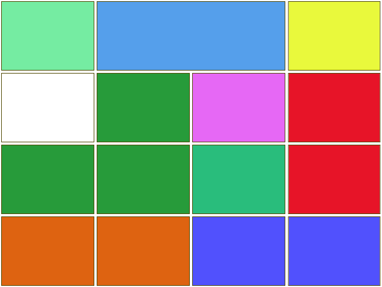

A look at Spatial and Chemical resolutions in Atmospheric chemistry transport models
By Ben Newsome
Spatial Resolution
- Spatial resolution is important in global models for many reasons.
- It allows different areas to be distinguisable.
- It can give more accurate results.
Ozone production

Scinario
Take for example an area with high polutants next to an area with low polutants.
High Emmisions
Low Emmisions
Ozone dependency on Resolution
Problems with increased resolution
Increased compute time.
More data output.
Higher resolution means smaler timesteps due to transport properties.
Expected Results
Global Ozone Budget should change
Better more acurate results
Chemical Resolution
Many current atmospheric chemistry transport models only use a limited number of chemical species in a simulation.
By increasing the number of species, more accurate results should be obtainable.
MCM
The Master Chemical Mechanism
"The Master Chemical Mechanism (MCM) is a near-explicit chemical mechanism which describes the detailed gas-phase chemical processes involved in the tropospheric degradation of a series of primary emitted volatile organic compounds (VOCs). Currently, the degradation of methane and 142 non-methane VOCs is represented."
MCM Resolution
The MCM currently contains:
142 non-methane VOC's
About 17000 elementry reactions.
6700 primary, secondary and radical species.
142 non-methane VOC's
About 17000 elementry reactions.
6700 primary, secondary and radical species.
MCM Implimentaton
To impliment all these species into the model, the framework has had to be re-written to allow many more species then were initialy intended.
Several other factors including deposition rates for the new species and linking up photolysis rates need to be accounted for.
Lower Resolution
Using the MCM chemistry scheme as a benchmark for atmospheric simulations, more computationaly effiecent schemes can be compaired and verified.
Statistical methods can be applied to find which speceis have the largest and smalest effect, and new chemistry schemes can be generated.
Expected Results
Idealy, very little will change which would mean our current models are accurate.
There could easily be "fudges" in current models that have been implimented to make the models look like experimental data, and this could expose them? I dont like this slide###
Supervisors: Professor Mathew Evans
& Professor Alastair Lewis

References and QR
